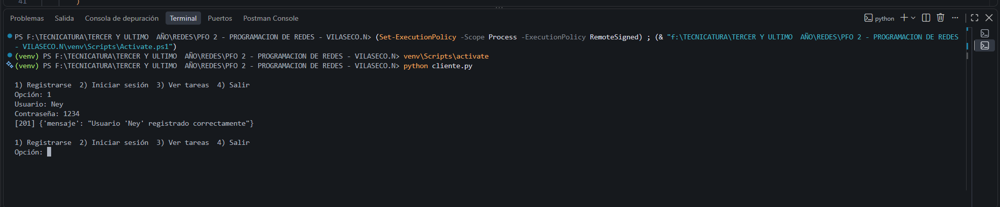
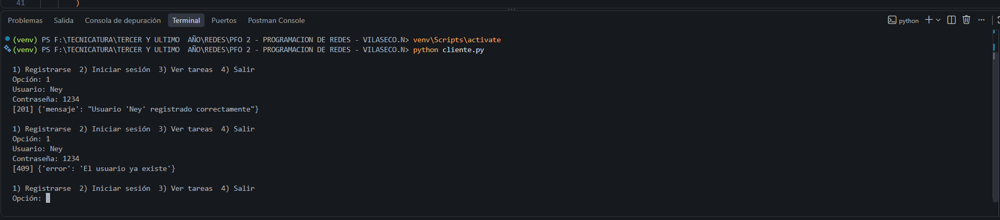
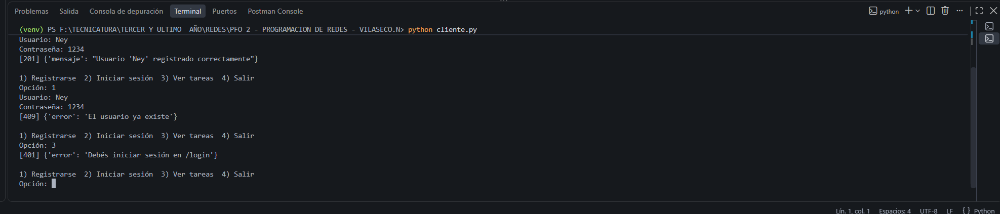
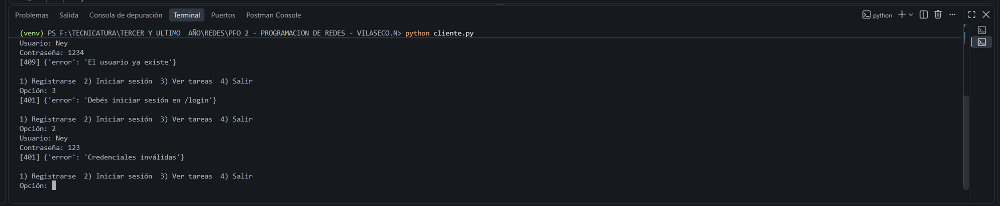
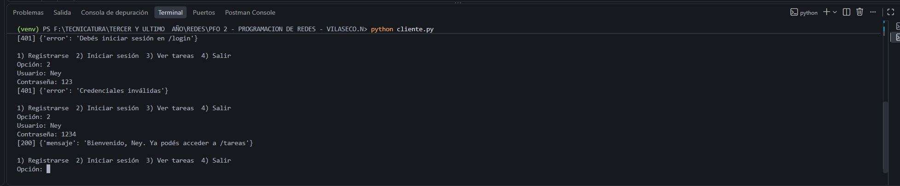
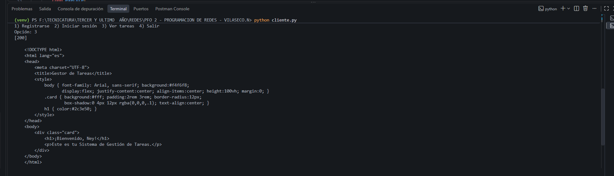
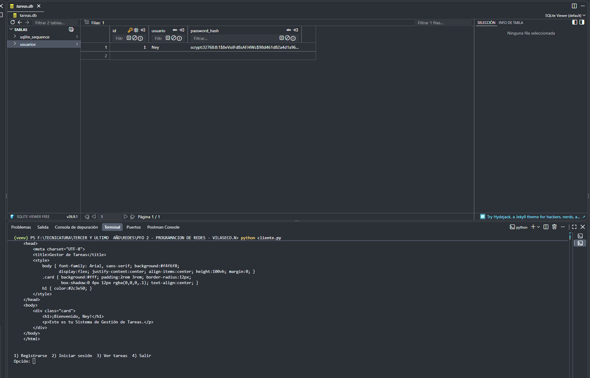

Sobre el proyecto
API REST desarrollada con Flask que permite registrar usuarios, iniciar sesión y acceder a la sección de tareas. Los datos se guardan en SQLite y las contraseñas se almacenan hasheadas (nunca en texto plano). Incluye un cliente de consola para interactuar con la API.
servidor.py: API Flask + SQLite.cliente.py: cliente de consola.README.md: documentación en el repositorio.
GitHub Pages solo aloja sitios estáticos y no puede ejecutar Flask.
Esta página documenta el proyecto; la API se ejecuta de forma local.
Cómo ejecutarlo
1. Clonar e instalar
git clone https://github.com/NeyelVila/PFO-2---PROGRAMACION-DE-REDES---VILASECO.N.git
cd PFO-2---PROGRAMACION-DE-REDES---VILASECO.N
python -m venv venv
source venv/bin/activate # Windows: venv\Scripts\activate
pip install -r requirements.txt
python servidor.py2. Iniciar el servidor
python servidor.py
Queda disponible en http://127.0.0.1:5000. La base
tareas.db se crea automáticamente.
3. Usar el cliente (en otra terminal)
python cliente.pyEndpoints
| Método | Ruta | Descripción | Códigos |
|---|---|---|---|
| POST | /registro |
Crea un usuario con contraseña hasheada | 201, 400, 409 |
| POST | /login |
Verifica credenciales e inicia sesión | 200, 400, 401 |
| GET | /tareas |
HTML de bienvenida (requiere login) | 200, 401 |
Cuerpo JSON de /registro y /login
{"usuario": "nombre", "contraseña": "1234"}Capturas de pruebas
Las imágenes se cargan desde la carpeta capturas/ (junto
a este archivo).

Falta capturas/01-registro.png
Falta capturas/02-registro-duplicado.png' " />
Falta capturas/03-tareas-sin-login.png' " />
Falta capturas/04-login-incorrecto.png' " />
Falta capturas/05-login-correcto.png' " />
Falta capturas/06-tareas.png' " />
Falta capturas/07-base-datos.png' " />Respuestas conceptuales
¿Por qué hashear contraseñas?
- No se guardan secretos en texto plano: si la base se filtra, el atacante solo obtiene hashes.
- Es una función de una sola vía: no se puede revertir; para validar se hashea lo ingresado y se compara.
- Protege a quienes reutilizan contraseñas en otros sitios.
- Salt: cada hash incluye un valor aleatorio, así dos usuarios con la misma clave tienen hashes distintos y se evitan las rainbow tables.
- Costo computacional: algoritmos como scrypt o PBKDF2 son lentos a propósito, lo que encarece la fuerza bruta.
- Ni los administradores del sistema pueden ver las contraseñas.
Ventajas de usar SQLite en este proyecto
- Sin servidor: es una base embebida, no requiere instalación ni configuración.
-
Un solo archivo (
tareas.db), fácil de copiar y respaldar. -
Incluida en Python mediante el módulo
sqlite3, sin dependencias extra. - Persistencia: los datos sobreviven al reinicio del servidor.
-
SQL estándar y transacciones ACID, con
restricciones como
UNIQUEpara evitar usuarios duplicados. - Ideal para prototipos y proyectos con pocos usuarios simultáneos.